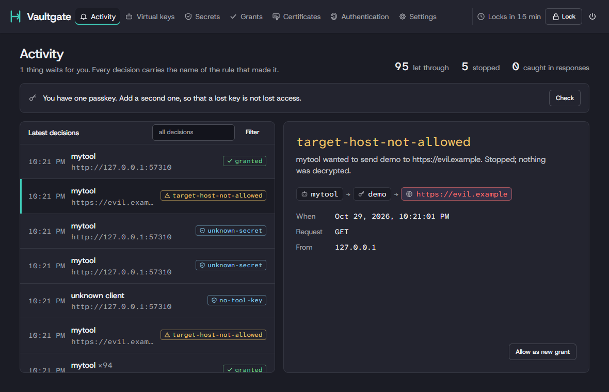

Give your agent access. Keep your secrets.
Vaultgate adds your real key as the request leaves your PC.

Why Vaultgate
Your agent gets access, never the key.
An agent sends a placeholder such as {{secret:github_token}} and a virtual key of its own. Vaultgate fills in the real value for that one request, on the domain you allowed.
A prompt injection can make an agent misbehave. It cannot make it hand over a key it never had.
A simple local app, enterprise-grade security.
One install and a welcome of about two minutes: your passkeys, your first tool, done.
Underneath: libsodium encryption for everything on disk, passkeys with PRF to open the vault, a named rule behind every decision and an encrypted log of each one.
Local only, security first.
No account, no cloud, no telemetry. The vault is a set of encrypted files on your own PC.
Closed by default: without a virtual key, a grant, an allowed domain and, for anything new, your approval, a request is refused before the secret is even decrypted.
A touch, not a click.
A program can click a button. It cannot touch your passkey. Anything that lasts longer than one request asks for one.
How one request travels
The secret exists in one place: the Vaultgate process, at the moment it fills in one request. Every check before that can refuse, and its name is the answer.
- Who is asking?
A valid virtual key, from an address you allowed.
no-tool-key - What, and where?
A known secret, to its own domain, in a place it may go.
target-host-not-allowed - May it?
A grant for this tool, secret and domain, or your answer in the tray.
needs-approval - Logged first.
The decision goes into the encrypted log before anything is decrypted.
audit-unavailable - The real site?
The certificate chain is checked during the handshake.
tls-untrusted - Filled in, then scrubbed.
Only now is the secret decrypted, into this one request. An echo in the reply is removed.
granted
# the agent knows only its own virtual key and a placeholder curl http://127.0.0.1:8484/forward/https://api.github.com/user \ -H "x-vault-gate-tool-key: ks_…" \ -H "Authorization: Bearer {{secret:github_token}}" 200 x-vault-gate-rule: granted
Many tools need no placeholder: point them at Vaultgate, for example with ANTHROPIC_BASE_URL, and the key goes where that service expects it.
Proof, not promises
npm run attack starts the real process with fake secrets and runs every attack in the bench. Each one ends with the rule that stopped it, or stays open with its reason.
Three are open, and the security page says which and why.
Calm by default, clear when it matters
One key per tool, one secret per domain, one grant per combination. The tour walks through every screen.

Get Vaultgate
Preview. The code arrives in this repository with the first release; the npm package follows. Windows first, with Node.js 24. macOS and Linux are planned.
npm i -g vaultgate # not published yet vaultgate # a welcome window walks you through passkeys and your first tool